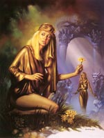

Персефона, в грецькій міфології дочка Зевса і богині Деметри. Богиня родючості і землеробства Деметра дуже любила свою єдину дочку, красуню Персефону. Для неї вона виростила прекрасні запашні квіти на луках Еллади, дозволила бабками і метеликам пурхати серед них, а співочих птахів наповнювати луги і гаї мелодійним співом. Юна Персефона обожнювала світлий світ дядька Геліоса - бога Сонця і мамині зелені луки, пишні дерева, яскраві квіти і дзюркотливі всюди струмочки, на поверхні яких грали відблиски сонця. Ні вона, ні її мати не знали, що Зевс пообіцяв її в дружини своєму похмурому братові Аїду - богові підземного царства.
Одного разу Деметра з Персефоной гуляли по зеленому лузі. Персефона гуляла з подругами, радіючи світла і тепла, впиваючись ароматами лугових квітів. Несподівано в траві вона знайшла квітку невідомої краси, що видавав дурманний запах. Це Гея на прохання Аїда виростила його, щоб привернути увагу Персефони. Як тільки дівчина торкнулася дивного квітки, розверзлася земля і з'явилася золота карета, запряжена чотирма чорними кіньми. Нею правил Аїд. Він підхопив Персефону і забрав її до свого палацу в підземному царстві. Убита горем Деметра одягалася в чорний одяг і відправилася на пошуки дочки.
Похмурі часи настали для всіх, хто живе на землі. Дерева втратили пишне листя, квіти зів'яли, злаки не дали зерна. Чи не плодоносили ні поля, ні сади. Настав голод. Завмерла вся життя. Роду людському загрожувала загибель. Боги, які час від часу спускалися до людей з Олімпу і дбали про них, стали просити Зевса сказати Деметрі правду про Персефоне.
Але дізнавшись правду, мати ще більше затужила за дочкою. Тоді Зевс послав до Аїду Гермеса з проханням відпускати час від часу дружину на землю, щоб Персефона могла бачитися з матір'ю. Аїд не посмів не послухатися Зевса. Побачивши дочку, Деметра зраділа, в очах її заблищали сльози радості. Цією вологою наповнилася земля, ніжною травою вкрилися луки, і квіти розпустилися на недавно пониклі стеблах. Незабаром заколосились і хлібородні ниви. Природа прокинулася до нового життя. З тих по велінню Зевса Персефона дві третини року зобов'язана проводити з матір'ю і одну третину - з чоловіком.
Так виникло чергування пір року. Коли Персефона знаходиться в царстві чоловіка, смуток нападає на Деметру, а на Землі наступає зима. Але зате кожне повернення дочки до матері в світ дядька Геліоса все живе новими соками і приводить із собою весну у всій її торжествуючої красі. Ось чому Персефону завжди зображують у вигляді прекрасної дівчини з букетом квітів і снопом колосків і вважають її богинею наступаючої весни, сестрою богині царства квітів і рослин Флори. І живе вона на небі як чудове сузір'я Діва. Найяскравіша зірка в сузір'ї Діви називається Спіка, що означає колос. У римській міфології богині відповідає Прозерпіна.